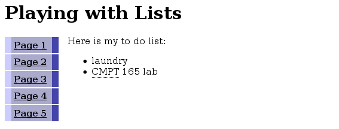
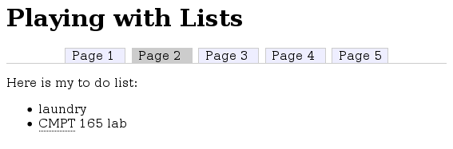

This lab is designed to make you think more about the details of how formatting can be done with CSS. The questions in this lab were inspired by css.maxdesign's Listamatic, which contains dozens of styles for simple HTML lists.
You will definitely need the CSS Reference for this lab.
-
Save this unstyled XHTML file. Create a stylesheet for this page. You will be styling only the menu list—the other list should remain unchanged.
- Make the menu list
floatto the left. Give it awidthof6em. Give the<div id="main">a left margin of7em, so it stays to the right of the menu. - Remove the bullets from the menu items by using the
list-style-typeproperty. You will need to use a contextual selector to get at those list items:ul#menu li. - Set the colours and spacing of the elements so it looks something like the screenshot below.
- Hint 1: The list items are coloured by assigning a background colour and thick left and right borders, and removing top and bottom borders (by setting their width to zero). The colours used in the screenshot are
#44a,#aac, and#ccf. - Hint 2: Whenever you're working on the spacing of elements, start by setting both the margin and padding to zero (for both the
<ul>and its<li>s in this case). This will give you a predictable starting point by removing any browser defaults. Add margins and padding from there as needed.margin: 0;
padding: 0;
You shouldn't be concerned about making your page look exactly like the screenshot, but it should be close.
 - Make the menu list
-
Make another copy of the unstyled XHTML file (with a different file name, obviously). Create another stylesheet for this page. (You should upload both XHTML pages and both CSS files when you're done.)
- Position the list items in the menu list on one line by setting the
displayproperty on the<li>s toinline. Remove the bullets from this list as well. - Set the borders around the
<li>, and the bottom border for the<ul>, as you see in the screenshot. Set the background colour and margins/padding as well. The colours used in the screenshot are#cccand#eef. - Give the “current” menu item a different background colour, as in the screenshot.
- Remove the underline (
text-decoration) from the links in the menu, and set their colour to black.
 - Position the list items in the menu list on one line by setting the
When you're done, upload the files from this lab to the course web server. Submit the URLs of the pages you created to CourSys.